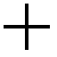

ClipGraph
取扱説明書
User's Guide
| 目次 |
メニューボタン
環境設定
数値入力
線形座標、対数座標
媒介変数
極座標
数表機能
プログラム機能
技術情報
ボタンの働き
| メニューボタン |
グラフ画面
計算式入力画面
エディター画面
計算式の履歴／エラー表示
変数値入力画面
数表画面
環境設定画面
| 環境設定 |
ボタンを押すと、環境設定画面になります。
目盛り線
|
X方向 |
|
X方向目盛り線の描画単位を指定します。単位は座標値です。0.0を指定すると目盛り線の表示が行われません。 |
|
Y方向 |
|
Y方向目盛り線の描画単位を指定します。単位は座標値です。0.0を指定すると目盛り線の表示が行われません。 |
|
●設定した場合、前回までのグラフは消去されます。 |
目盛り文字
|
X方向 |
|
X方向目盛り文字の表示単位を正の整数で指定します。単位はX方向目盛り線の数です。0を指定すると目盛り文字の表示が行われません。 |
|
Y方向 |
|
Y方向目盛り文字の表示単位を正の整数で指定します。単位はY方向目盛り線の数です。0を指定すると目盛り文字の表示が行われません。 |
|
●設定した場合、前回までのグラフは消去されます。 |
グラフ再生成
|
□座標系の変更時 |
|
XY座標系(線形座標、対数座標)内での切り替え時にグラフを再生成させる場合、チェックを付けます。XY座標系・媒介変数・極座標間での切り替え時は、このオプションに関わらず、計算式、グラフともにクリアされます。 |
|
□角度の単位変更時 |
|
角度指定(Deg、Rad、Grad)の変更時にグラフを再生成させる場合、チェックを付けます。 |
|
□ウィンドウ座標の変更時 |
|
|
環境設定ｴｸｽﾎﾟｰﾄ
|
ボタンを押すと、環境設定内容がテキスト表示されます。テキスト内容を「すべて選択」してコピー(クリップボードにコピー)し、メモ帳などにペーストして保存しておいてください。 |
環境設定ｲﾝﾎﾟｰﾄ
|
テキストエリアに環境設定内容を入力(メモ帳などからコピー&ペースト)して、ボタンを押してください。テキストエリアに入力する内容は、エクスポート時の内容全てである必要はありません。反映させたい内容のみを入力してください。 |
| 数値入力 |
■浮動小数点
例1 123.45
12345
例2 -1.2e+3 (指数表記)
123
■複素数
例1 12.3+4.5i (実数部12.3と虚数部+4.5)
12345
例2 1e-2-3e+4i (実数部1e-2と虚数部-3e+4)
1234
例3 -i (実数部は省略できます。また、虚数部の1は省略できます。)
例4 (12 34) (実数部12と虚数部34)
1234
| 線形座標、対数座標 |
●線形座標グラフを描画するには、線形座標モードにします。対数座標グラフを描画するには、X軸対数・Y軸対数・対数座標モードにします。
●計算式1(上段)に変数xを含む計算式y=f(x)を入力します。X座標値xに対するY座標値yを求めます。
■ウィンドウ設定
ボタンを押すとウィンドウ設定画面になります。
オフセット指定
|
X方向オフセット |
|
原点のX方向位置を、グラフ画面左からのオフセットで指定します。単位はpixelです。 |
|
Y方向オフセット |
|
原点のY方向位置を、グラフ画面上からのオフセットで指定します。単位はpixelです。 |
|
X方向の単位 |
|
X軸対数モードの場合、X方向での10nから10n+1の間隔を指定します。その他のモードの場合、X方向での値1.0分の間隔を指定します。単位はpixelです。 |
|
Y方向の単位 |
|
Y軸対数モードの場合、Y方向での10nから10n+1の間隔を指定します。その他のモードの場合、Y方向での値1.0分の間隔を指定します。単位はpixelです。 |
ウィンドウ指定
|
Left |
|
グラフ画面左のX座標値を指定します。 |
|
Right |
|
グラフ画面右のX座標値を指定します。 |
|
Bottom |
|
グラフ画面下のY座標値を指定します。 |
|
Top |
|
グラフ画面上のY座標値を指定します。 |
●ウィンドウで指定した場合、若干の誤差が生じます。
●設定した場合、前回までのグラフは消去されます。
■グラフを描画する
●計算式1(上段)に変数xを含む計算式を入力し、ボタンを押します。
●変数xはボタンで入力します。
●計算式の先頭でのボタン入力および末尾でのボタン入力は省略することができます。
例1 y=√(x2+x-1)のグラフを描画する。
線形座標モードにする
1
1
sqrt(sqr x+x-1 |
例2
| y=sin(x+ |
π 2 |
)のグラフを描画する。 |
線形座標モードにする
角度の単位をRadにする
2

角度の単位をRadにする
2
sin(x+!pi/2 |
■トレースツール
●グラフ描画後にグラフ画面内をタップすることで、X座標値に対応するY座標値を取得します。
●水平方向にドラッグすることでリアルタイムにY座標値を確認できます。
x= | 0.775 | |
y= | 0.7144210340559314 |
■手のひらツール
●グラフ画面をドラッグでスクロールさせます。
●環境設定で、ウィンドウ座標の変更時にグラフ再生成するように設定している場合、画面外であった部分のグラフが自動的に生成されます。
●前回までのグラフは消去されます。

■ボックスズームツール
●グラフ画面をドラッグで領域指定して放すと、指定領域がグラフ画面サイズまで拡大されます。
●環境設定で、ウィンドウ座標の変更時にグラフ再生成するように設定している場合、グラフが自動的に再生成されます。
●前回までのグラフは消去されます。

(y=x3-4*x)
■拡大
●ボタンでグラフ画面を拡大できます。
●グラフ画面の中心を基準に拡大されます。
●環境設定で、ウィンドウ座標の変更時にグラフ再生成するように設定している場合、グラフが自動的に再生成されます。設定されていない場合、前回のサンプリングデータの間は直線補間されます。
●前回までのグラフは消去されます。

■縮小
●ボタンでグラフ画面を縮小できます。
●グラフ画面の中心を基準に縮小されます。
●環境設定で、ウィンドウ座標の変更時にグラフ再生成するように設定している場合、画面外であった部分のグラフが自動的に生成されます。
●前回までのグラフは消去されます。

| 媒介変数 |
●媒介変数グラフを描画するには、媒介変数モードにします。
●計算式1(上段)に変数tを含む計算式x=f(t)を、計算式2(下段)に変数tを含む計算式y=f(t)を入力します。変数tに対するX・Y座標値を求めます。
●変数tの範囲をmin・maxエディットボックスで、サンプリング間隔をpchエディットボックスで指定します。
■ウィンドウ設定
ボタンを押すとウィンドウ設定画面になります。
オフセット指定
|
X方向オフセット |
|
原点のX方向位置を、グラフ画面左からのオフセットで指定します。単位はpixelです。 |
|
Y方向オフセット |
|
原点のY方向位置を、グラフ画面上からのオフセットで指定します。単位はpixelです。 |
|
単位 |
|
XY方向での値1.0分の間隔を指定します。単位はpixelです。 |
●設定した場合、前回までのグラフは消去されます。
■グラフを描画する
●計算式1(上段)と計算式2(下段)に変数tを含む計算式を入力し、ボタンを押します。
●変数tはボタンで入力します。
●計算式の先頭でのボタン入力および末尾でのボタン入力は省略することができます。
例1 カージオイド
x=2*cosθ-cos(2*θ)
y=2*sinθ-sin(2*θ)
角度の単位をDegにする
min値を0.0、max値を360.0、pch値を1.0に設定する
(x=) 22
(y=) 22

min値を0.0、max値を360.0、pch値を1.0に設定する
(x=) 22
2*cos t-cos(2*t |
(y=) 22
2*sin t-sin(2*t |
例2 アステロイド
| x= |
3 4 |
cosθ+ |
1 4 |
cos(3*θ) |
| y= |
3 4 |
sinθ- |
1 4 |
sin(3*θ) |
角度の単位をDegにする
min値を0.0、max値を360.0、pch値を1.0に設定する
(x=) 34143
(y=) 34143
min値を0.0、max値を360.0、pch値を1.0に設定する
(x=) 34143
3/4*cos t+1/4*cos(3*t |
(y=) 34143
3/4*sin t-1/4*sin(3*t |
■トレースツール
●グラフ描画後にグラフ画面内をタップすることで、タップ位置に最も近いXY座標値を取得します。
●ドラッグすることでリアルタイムにXY座標値を確認できます。

(x=sinθ、y=cosθ)
t= | 51 | |
x= | 0.7771459614569708 | |
y= | 0.6293203910498375 |
■手のひらツール
●グラフ画面をドラッグでスクロールさせます。
●前回までのグラフは消去されます。
■ボックスズームツール
●グラフ画面をドラッグで領域指定して放すと、指定領域がグラフ画面サイズまで拡大されます。
●領域は強制的にグラフ画面の縦横比率になります。
●環境設定で、ウィンドウ座標の変更時にグラフ再生成するように設定している場合、グラフが自動的に再生成されます。
●前回までのグラフは消去されます。
■拡大
●ボタンでグラフ画面を拡大できます。
●グラフ画面の中心を基準に拡大されます。
●前回までのグラフは消去されます。

■縮小
●ボタンでグラフ画面を縮小できます。
●グラフ画面の中心を基準に縮小されます。
●前回までのグラフは消去されます。
| 極座標 |
●極座標グラフを描画するには、極座標モードにします。
●計算式1(上段)に変数tを含む計算式r=f(t)を入力します。角度tに対する半径rを求めます。
●角度tの範囲をmin・maxエディットボックスで、サンプリング間隔をpchエディットボックスで指定します。
●min・max・pch値は角度指定(Deg、Rad、Grad)に依存します。また、角度指定(Deg、Rad、Grad)を変更すると自動的に変換されます。
■ウィンドウ設定
ボタンを押すとウィンドウ設定画面になります。
オフセット指定
|
X方向オフセット |
|
原点の水平方向位置を、グラフ画面左からのオフセットで指定します。単位はpixelです。 |
|
Y方向オフセット |
|
原点の垂直方向位置を、グラフ画面上からのオフセットで指定します。単位はpixelです。 |
|
単位 |
|
半径1.0分の間隔を指定します。単位はpixelです。 |
●設定した場合、前回までのグラフは消去されます。
■グラフを描画する
●計算式1(上段)に変数tを含む計算式を入力し、ボタンを押します。
●変数tはボタンで入力します。
●計算式の先頭でのボタン入力および末尾でのボタン入力は省略することができます。
例1 カージオイド
| r=(2*cos |
θ 2 |
)2 |
角度の単位をDegにする
min値を0.0、max値を360.0、pch値を1.0に設定する
222

min値を0.0、max値を360.0、pch値を1.0に設定する
222
pow(2*cos(t/2))2 |
例2 正葉線 r=2*sin(2*θ)
角度の単位をDegにする
min値を0.0、max値を360.0、pch値を1.0に設定する
22

min値を0.0、max値を360.0、pch値を1.0に設定する
22
2*sin(2*t |
例3 放物線
| r= |
1 1-cosθ |
角度の単位をDegにする
min値を0.0、max値を360.0、pch値を1.0に設定する
11
min値を0.0、max値を360.0、pch値を1.0に設定する
11
1/(1-cos t |
■トレースツール
●グラフ描画後にグラフ画面内をタップすることで、タップ位置に最も近いデータ値を取得します。
●ドラッグすることでリアルタイムに値を確認できます。
t= | 205 | |
r= | 1.5320888862379556 |
■手のひらツール
●グラフ画面をドラッグでスクロールさせます。
●前回までのグラフは消去されます。

■ボックスズームツール
●グラフ画面をドラッグで領域指定して放すと、指定領域がグラフ画面サイズまで拡大されます。
●領域は強制的にグラフ画面の縦横比率になります。
●環境設定で、ウィンドウ座標の変更時にグラフ再生成するように設定している場合、グラフが自動的に再生成されます。
●前回までのグラフは消去されます。
■拡大
●ボタンでグラフ画面を拡大できます。
●グラフ画面の中心を基準に拡大されます。
●前回までのグラフは消去されます。
■縮小
●ボタンでグラフ画面を縮小できます。
●グラフ画面の中心を基準に縮小されます。
●前回までのグラフは消去されます。

| 数表機能 |
●ボタンを押すと、数表画面になります。
●トレースツールで計算値を取得してボタンを押すと、数表に登録されます。
ボタン
|
選択されている計算値を数表から削除します。 |
ボタン
|
選択されている計算値でグラフ画面上に十字線を描きます。 |
| プログラム機能 |
●ボタンを押すと、エディターが起動します。
●プログラムメモリーは26個(a～z)あります。
●プログラムが変更されるとボタンが表示されます。編集内容を保存するにはボタンを押してください。
●呼び出しはボタンで行います。計算式に関数として入力され、続けて関数パラメータを入力することができます。
●ボタンが押されると、自動で編集内容が保存されます。
●プログラム内で「:parent」コマンドを用いることで、変数値(@A～@Z)を参照することができます。例えば変数@Aを参照する場合、「:parent @A」のように記述します。
| 技術情報 |
■計算の優先順位
下記の順位で計算されます。
| (1) [-]、^、関数 (2) *、/、% (3) +、- |
●関数が連続している時は右側から左側へ実行されます。
exp log sqrt x → exp(log(sqrt x))
●同順位の演算子が連続している時は左側から右側へ実行されます。
12+t-34+t → ((12+t)-34)+t
●括弧が使用された場合は、括弧内が最優先されます。
■関数の入力範囲
| 関数 | 入力範囲 |
| asin x | -1≦x≦1 |
| acos x | -1≦x≦1 |
| acosh x | 1≦x |
| atanh x | -1＜x＜1 |
| ln x | 0＜x |
| log x | 0＜x |
| log10 x | 0＜x |
| sqrt x | 0≦x |
| ボタンの働き |
■計算式入力画面
|
～ 置数ボタン 数値を入力するときに押します。 |
|
負数ボタン 負の数を入力するときに押します。 |
|
演算子ボタン 演算子を入力するときに押します。 |
|
xy 累乗ボタン xのy乗を計算するときに押します。 |
|
括弧入力ボタン 括弧を入力するときに押します。 |
|
変数ボタン 変数x(線形座標・X軸対数・Y軸対数・対数座標モード時)またはt(媒介変数・極座標モード時)を入力するときに押します。 |
|
リコールメモリーボタン メモリーに記憶した数値を呼び出すときに押します。 ※あらかじめ選択された変数が対象です。 |
|
スペースボタン 空白文字を入力するときに押します。 |
|
デリートボタン 間違えて入力した数値や関数を削除するときに押します。 |
|
オールクリアボタン エディットボックス内の全消去を行うときに押します。 |
|
x x x 三角関数ボタン 三角関数を計算するときに押します。引数に指定する値は角度指定(Deg、Rad、Grad)に依存します。 |
|
x x x 逆三角関数 逆三角関数を計算するときに押します。結果は角度指定(Deg、Rad、Grad)に依存します。 |
|
x x x 双曲線関数 双曲線関数を計算するときに押します。 |
|
x x x 逆双曲線関数 逆双曲線関数を計算するときに押します。 |
●その他の内部関数ボタン
|
yx y/xの逆正接を計算します。結果は角度指定(Deg、Rad、Grad)に依存します。 |
|
(C言語モード)x (電卓モード)x 自然対数を計算するときに押します。 |
|
(C言語モード)x (電卓モード)x 常用対数を計算するときに押します。 |
|
x eのx乗を計算するときに押します。 |
|
x 10のx乗を計算するときに押します。 |
|
x 自乗を計算するときに押します。 |
|
x 平方根(ルート)を計算するときに押します。 |
|
xy xのy乗を計算するときに押します。 |
|
x 絶対値を求めます。 |
|
x x以上の最小の整数を求めます。 |
|
x x以下の最大の整数を求めます。 |
|
x 整数に丸めるときに押します。 |
|
x 複素数の実数部を求めます。 |
|
x 複素数の虚数部を求めます。 |
|
x 複素数の位相角度を求めます。結果は角度指定(Deg、Rad、Grad)に依存します。 |
|
x 絶対値の自乗を求めます。 |
|
x 共役複素数を求めます。 |
|
rhotheta 絶対値rho、位相角度thetaの複素数値を求めます。thetaは角度指定(Deg、Rad、Grad)に依存します。 |
|
0から32767の間で疑似乱数を発生させます。 |
|
現在の時刻を得ます。 |
●外部関数ボタン
ボタンが表示されている場合、読み込むためにボタンを押してください。
ストレージクリアまたはCookieクリアを行うと、再度ボタンを押す必要があります。
|
円周率 |
|
自然対数の底 |
|
val 立方根 |
|
val 底2の対数 |
|
nval 底nの対数 |
|
x xに1を加えた値の対数 |
|
x xの指数から1を引いた値 |
|
x 0に近い方の整数値に丸めます。 |
■グラフ画面
|
 トレースツール 座標を読み取ります。 |
|
手のひらツール グラフ画面をスクロールさせます。 |
|
ボックスズームツール グラフ画面のトリミングを行います。 |
|
拡大ボタン グラフ画面を拡大します。 |
|
縮小ボタン グラフ画面を縮小します。 |
|
ウィンドウ設定ボタン グラフ画面のウィンドウ設定を行います。 |
|
グラフ描画ボタン グラフを描きます。 |
|
クリアボタン グラフをクリアします。 |
|
ストアボタン トレースした結果を数表に登録するときに押します。 |
| ClipGraph Copyright (C) SatisKia |